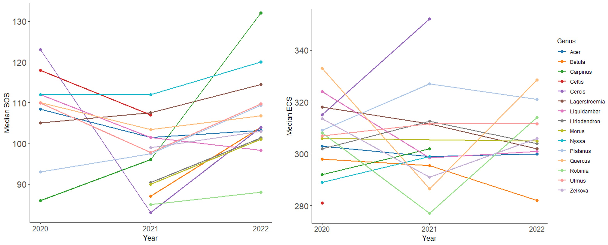
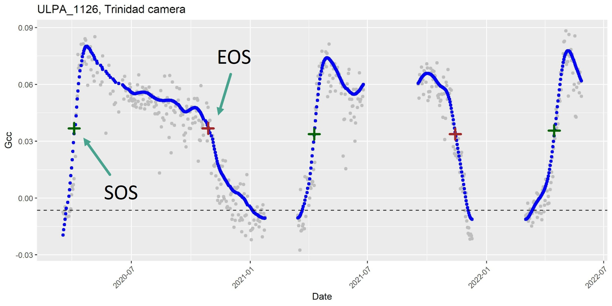
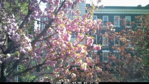
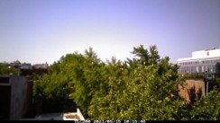

Urban Tree Phenology
Investigating the variability of urban tree phenology using volunteer-hosted phenocams
Abstract: The timing of vegetative phenology governs annual ecosystem function and is a component of community diversity and productivity. Consequently, phenology is key to monitoring and measuring ecological responses to environmental change. In cities, the timing of tree phenological events such as leaf unfolding and leaf coloring is altered due to regional climate factors like winter chilling length and spring warming temperatures, as well as site-specific variation such as land cover and genus. However, the variability of these changes to urban phenology, as well as the factors that govern variation, are not well explored. Likewise, while many studies use digital time-lapse cameras to study phenology in rural settings, few have used phenological cameras, phenocams, in the urban environment. To investigate the phenology of urban trees using phenocams, this novel study used the city of Washington, D.C. to explore the interannual changes occurring in city trees, as well as the feasibility of using phenocams in combination with volunteer camera hosts. Phenocams were placed throughout the greater D.C. area in the homes of volunteers and on the campuses of two educational institutions. Each phenocam captured images of either a single tree crown or multiple over the course of three study years. From camera imagery, start of season (SOS) and end of season (EOS) were estimated by fitting a spline to each tree's green chromatic coordinate (Gcc) data, which were extracted at a near-continuous temporal resolution. Statistical analysis revealed that there were significant differences in SOS between years. Further analysis of climatic and site variables found that temperature and impervious surface significantly influenced SOS and EOS respectively. Additional analysis showed that tree genera responded to annual changes in moderate synchrony. Assessment of community science implementation found that inclusion of volunteers increased the educational reach of the study, but likely created noise in the data due to issues such as accidental phenocam disturbance and repositioning. This novel study provides useful information for the methodology of future urban phenocam research and provides a preliminary understanding of phenology in the Washington, D.C. area.
Selected Results: My research found that phenocams could detect significant differences in the SOS of trees, but struggled with finding significant trends across EOS. This could be due in part to the highly complex and variable assemblage of mechanisms that are present in the fall. 
The hierarchical mixed-effects modeling revealed that temperature had a significant influence on SOS phenology, while impervious surface cover was more influential during EOS. The strong increase in greenness can be seen on the example spline (provided below). This curve represents gcc values throughout a data collection period. The resulting pattern is a steep rise in gcc during the spring, a leveling-off during the summer, and a less-steep decline in gcc as the tree approaches the colder end of year. 
Discussion and Conclusion: Phenocams represent an enormous potential for novel and affordable data collection methods. The existing Phenocam Network is an excellent example of the use of these tools. In an urban setting, phenocams may be integrated with community or citizen science, and they offer researchers the ability to examine urban vegetation on a highly granular scale. Phenocam set up and external site characteristics may add complexity to a study, and future work should try to incorporate satellite validation of the green chromatic coordinate data. In sum, it is feasible to identify phenological shifts using phenocam technology. Thanks to the relative accessibility of phenocams, these data may be useful and usable for both scientists and community members alike.  
Tools Used: R, ArcGIS Pro
Keywords: Urban Trees, Phenology, Community Science, Phenocam
Project Contributors: Maya Hall (graduate student), Dr. Michael Alonzo (advisor)
← Back to Projects